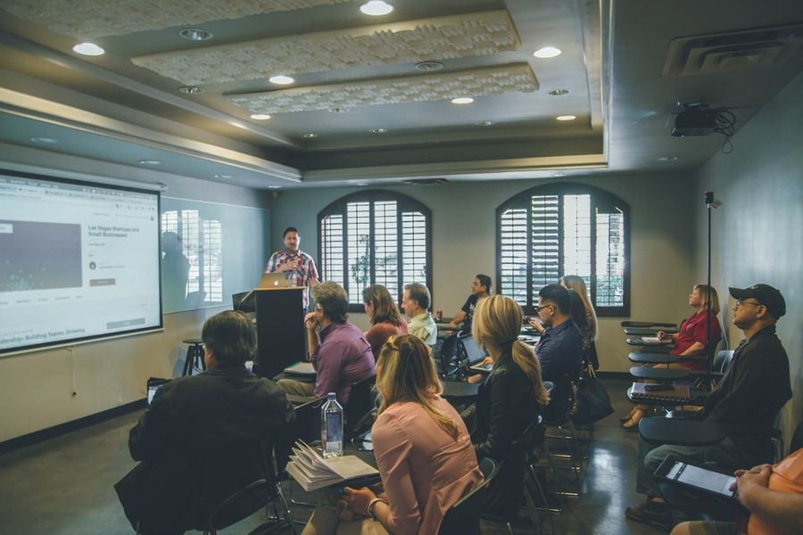

01
講習・セミナーの開催
Seminars年に数回、社外の会場で講習を開いています。ITやAIの活用、システム開発やインフラの現場で得てきたことなど、テーマはその回ごとに設定します。
開催のご案内は、本サイトのお知らせやSNSでお伝えします。
代表が講師となり、年に数回、社外で講習を開いています。
ITの現場で培ってきた知識と経験を、聞いて終わりにせず、仕事で「できる」に変えてもらうための場です。テーマや形式は、その回ごとに参加する方に合わせて決めています。

年に数回、社外の会場で講習を開いています。ITやAIの活用、システム開発やインフラの現場で得てきたことなど、テーマはその回ごとに設定します。
開催のご案内は、本サイトのお知らせやSNSでお伝えします。
企業や団体からの講習・研修のご依頼についても、ご相談を承ります。内容・時間・人数に合わせて、無理のない形をご提案します。
まずはお問い合わせフォームから、目的と時期をお知らせください。
ＳＥＳ事業において御協業いただけるビジネスパートナー企業様を募集しております。